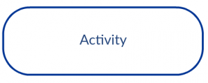
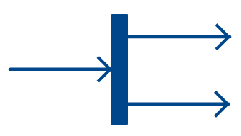

#### Ingeniería de Software # UML: Diagrama de Actividad Created by <i class="fab fa-telegram"></i> [edme88]("https://t.me/edme88") --- <!-- .slide: style="font-size: 0.75em" --> <style> .grid-item { border: 3px solid rgba(121, 177, 217, 0.8); padding: 20px; text-align: left !important; } .exercise-slide { border: 2px dashed #b58900; border-radius: 12px; padding: 20px; } .fuente { border-top: 2px solid rgba(121, 177, 217, 0.6); padding-top: 8px; margin-top: 14px; font-size: 0.80em; } </style> ## Recorrido <div class="grid-item"> 1. **Qué es** y cuándo conviene usarlo 2. **Los símbolos** 3. **Ejemplos** para leer 4. **Diagramas de canal** (swimlanes) 5. **Cómo dibujar uno** — método y decisiones 6. **Ejercicios** </div> --- ## 1 · Qué es <!-- .slide: style="font-size: 0.85em" --> Es un diagrama de **comportamiento**, muy similar a un diagrama de flujo. Ilustra el **flujo de actividades** a través de un sistema, y ayuda a visualizar un caso de uso a un nivel más detallado. Los casos de uso, junto con los diagramas de actividad y de canal, están **orientados al procedimiento**: representan la manera en que los distintos actores invocan funciones específicas para satisfacer los requerimientos del sistema. ---- ### ¿Actividad o secuencia? <!-- .slide: style="font-size: 0.78em" --> Los dos muestran **orden temporal**, y por eso se confunden. La diferencia está en qué ponen en el eje protagonista: | | Diagrama de actividad | Diagrama de secuencia | |---|---|---| | **Protagonista** | El **flujo**: qué pasa después de qué | Los **objetos**: quién le pide qué a quién | | **Responde** | ¿Cuál es el proceso? ¿Dónde se decide? ¿Qué corre en paralelo? | ¿Cómo colaboran las clases para resolverlo? | | **Momento** | Análisis: se entiende el negocio | Diseño: ya existen las clases | | **Quién lo entiende** | También el cliente | Solo el equipo técnico | **Regla práctica:** si podés mostrárselo al cliente, es de actividad. <div class="fuente"> 📎 [Práctico: Diagrama de Secuencia](U5P_4_UML_diagramas_secuencia.html) · [Qué diagrama responde qué pregunta](U5_modelado_de_sistemas.html#/10/3) </div> ---- ### ¿Qué es una "actividad"? <!-- .slide: style="font-size: 0.82em" --> Las actividades representan **acciones observables o relevantes del proceso**. Pueden ser del usuario, del sistema, de un servicio externo o de una base de datos, pero siempre pensando en **qué ocurre en el proceso**, no en el detalle técnico de los mensajes. * *"Presentar credencial"* — acción del usuario. * *"Verificar disponibilidad de copia"* — lo hace el sistema, no un humano. * *"Registrar préstamo en base de datos"* — acción del sistema. **El error típico es bajar demasiado:** si escribís *"ejecutar SELECT sobre la tabla ejemplares"*, ya no estás modelando el proceso sino la implementación. --- ## 2 · Los símbolos ### Flujo básico <!-- .slide: style="font-size: 0.68em" --> <table> <thead> <tr><th>Símbolo</th><th>Nombre</th><th>Uso</th></tr> </thead> <tbody> <tr> <td></td> <td>Nodo de inicio</td> <td>El punto de partida de la actividad. <strong>Hay uno solo.</strong></td> </tr> <tr> <td><p></p></td> <td>Actividad</td> <td>Una acción del proceso. Se nombra con un verbo en infinitivo.</td> </tr> <tr> <td></td> <td>Flujo de control</td> <td>Conecta una acción con la siguiente e indica la dirección.</td> </tr> <tr> <td></td> <td>Nodo final</td> <td>Termina <strong>todos</strong> los flujos de la actividad. Puede haber más de uno.</td> </tr> <tr> <td></td> <td>Nota / comentario</td> <td>Aclaraciones sobre cualquier elemento.</td> </tr> </tbody> </table> ---- ### Los símbolos vienen de a pares <!-- .slide: style="font-size: 0.66em" --> Lo que más se olvida: **todo lo que abre, cierra**. <table> <thead> <tr><th>Símbolo</th><th>Abre</th><th>Cierra</th><th>Qué modela</th></tr> </thead> <tbody> <tr> <td></td> <td><strong>Decisión</strong><br>una entrada, varias salidas con condición</td> <td><strong>Unión (merge)</strong><br>varias entradas, una salida</td> <td>Caminos <strong>alternativos</strong>: se toma <em>uno</em></td> </tr> <tr> <td><p></p></td> <td><strong>Bifurcación (fork)</strong><br>una entrada, varias salidas</td> <td><strong>Sincronización (join)</strong><br>espera a que lleguen todas</td> <td>Caminos <strong>paralelos</strong>: se ejecutan <em>todos</em></td> </tr> </tbody> </table> **La diferencia que hay que tener clara:** el rombo pregunta y elige **un** camino; la barra dispara **todos** los caminos a la vez. Un diagrama con forks sin join, o con decisiones que nunca vuelven a unirse, es el error más común al corregir. --- ## 3 · Ejemplos para leer ### Acceso al sistema (login)  **Mirá:** dónde está la decisión y por dónde vuelve el flujo cuando la validación falla. ---- ### Vigilancia con cámaras por internet  **Mirá:** cómo se modela una función que depende de un sistema externo. ---- ### Planeación de un proyecto  **Mirá:** el diagrama de actividad no sirve solo para software. Acá modela un **proceso de trabajo**, que es el uso que le damos cuando analizamos el negocio del cliente. ---- ### Sistema de gestión de documentos  ---- ### Compras en línea  ---- ### Cajero automático (ATM)  ---- ### Gestión universitaria  ---- ### 💡 Ejercicio: Leer los ejemplos <!-- .slide: class="exercise-slide" --> <!-- .slide: style="font-size: 0.78em" --> Volvé sobre los cuatro últimos diagramas y respondé para cada uno: 1. ¿Cuántos **nodos finales** tiene? Si hay más de uno, ¿por qué? 2. ¿Hay algún **fork**? Si lo hay, ¿dónde está su **join**? 3. Señalá una actividad que esté descripta a un nivel **demasiado técnico**, o una que esté **demasiado vaga**. 4. ¿Se entiende quién hace cada cosa, o haría falta dividirlo en canales? <!-- El punto 2 es el que más rinde: en varios ejemplos hay decisiones sin merge explícito, que es aceptable cuando cada rama termina en su propio nodo final, pero no cuando vuelven al flujo común. El punto 4 encadena con la slide siguiente: la respuesta suele ser que sí hace falta. --> --- ## 4 · Diagramas de canal (swimlane) <!-- .slide: style="font-size: 0.85em" --> Es una variación del diagrama de actividad. Muestra el mismo flujo, pero además indica **qué actor o clase de análisis es responsable** de cada acción. Las **responsabilidades** se representan con segmentos paralelos que dividen el diagrama en canales, como una pileta de natación. **Cuándo conviene:** en cuanto hay más de un actor involucrado. Sin canales, un diagrama con tres participantes no dice quién hace qué. ----  --- ## 5 · Cómo dibujar uno ### El método <!-- .slide: style="font-size: 0.85em" --> 1. Averiguar los **pasos de acción** del caso de uso. 2. Identificar a los **actores responsables** que están involucrados. 3. Encontrar el **flujo** entre las actividades: en qué orden se procesan y qué se puede paralelizar. 4. Añadir los **canales** según los responsables. **Regla de oro:** empezá por el **flujo feliz** más frecuente, y recién después agregá las variantes y las excepciones. Un diagrama que arranca contemplando todos los casos raros no se termina nunca. ---- ### El caso que usamos de ejemplo <!-- .slide: style="font-size: 0.78em" --> > **Sistema de biblioteca.** Los **socios** consultan el catálogo y piden prestados **ejemplares**; > los **trabajadores** registran préstamos y devoluciones y mantienen el catálogo. > > Un préstamo dura 3 semanas y se puede **renovar** si nadie reservó el ejemplar. Si no hay copias > disponibles, el socio puede **reservar**. Los límites son de 6 ejemplares para socios y 12 para > trabajadores. Las **revistas** solo las pueden retirar los trabajadores. Sobre este caso se discuten las tres decisiones que siguen. ---- ### Decisión 1: ¿un mega-diagrama o varios? <!-- .slide: style="font-size: 0.78em" --> **Un diagrama por caso de uso** *(recomendado)* — Consultar catálogo · Préstamo · Devolución · Reserva · Renovación · Actualización de catálogo. Cada uno empieza en su propio nodo inicial y queda más claro y mantenible. **Un único diagrama orquestador** — Empieza con "Elegir acción" y desde ahí llama a sub-actividades para cada caso. Es más grande, pero coherente. **En la duda, varios.** Un diagrama que no entra en una pantalla ya dejó de comunicar, que es lo único que un diagrama tiene que hacer. ---- ### Decisión 2: ¿cuál modelar primero? <!-- .slide: style="font-size: 0.80em" --> Empezá por el **flujo principal de mayor valor o frecuencia**: > Préstamo de libro — socio con copia disponible, sin reservas pendientes y dentro del límite. Después agregá las variaciones, en este orden: * Revistas, que solo pueden retirar los trabajadores * Los límites de 6 y 12 ejemplares * Copia no disponible → reserva * Renovación, si no hay reservas * Devolución * Y al final, actualización del catálogo, que es solo para personal autorizado ---- ### Decisión 3: ¿cómo estructurarlo bien? <!-- .slide: style="font-size: 0.80em" --> * Mantené **particiones por rol**: Socio / Trabajador / Sistema. * Usá **decisión y merge simétricos**: cerrá con un merge antes de volver al flujo común. * **Separá las reglas de negocio de la interfaz.** El canal del usuario lleva solo sus acciones; las validaciones y los límites van en el canal del sistema. * Donde haya notificaciones, usá **fork y join** para modelar lo que ocurre en paralelo. * Dejá claros los **prerrequisitos** del flujo. --- ### 💡 Ejercicio: Modelar el préstamo <!-- .slide: class="exercise-slide" --> <!-- .slide: style="font-size: 0.76em" --> Sobre el caso de la biblioteca, dibujá el **diagrama de canal** del caso de uso **Préstamo**, con tres particiones: Socio, Trabajador y Sistema. 1. Modelá primero el flujo feliz completo. 2. Agregá la decisión de **disponibilidad**: si no hay copia, se ofrece reservar. 3. Agregá la validación del **límite de ejemplares**, en el canal que corresponda. 4. Cuando se confirma el préstamo, el sistema **registra la operación y envía un mail** al socio. Modelá esas dos cosas en paralelo. <!-- Lo que se evalúa: - Que las validaciones estén en el canal Sistema y no en el del Socio (punto 3): es el error más frecuente y es el que arrastra malos diseños después. - Que el punto 4 use fork y join, no dos actividades en secuencia. Registrar y notificar no dependen una de otra. - Que las decisiones cierren con merge antes de volver al flujo común. - Que las actividades estén al nivel del proceso: "Verificar disponibilidad", no "Consultar tabla ejemplares". --> --- ### Antes de entregar, revisá <!-- .slide: style="font-size: 0.80em" --> * ¿Hay **un solo nodo inicial**? * ¿Cada **decisión** tiene sus condiciones escritas en las salidas? * ¿Cada **fork** tiene su **join**? ¿Cada decisión vuelve a unirse o termina en su propio final? * ¿Las actividades están al nivel del **proceso** y no de la implementación? * Si hay varios actores, ¿están los **canales**? * ¿Las validaciones y reglas de negocio están en el canal del **sistema**? --- ## ¿Dudas, Preguntas, Comentarios?  <!--https://es.venngage.com/blog/diagrama-de-actividades/-->